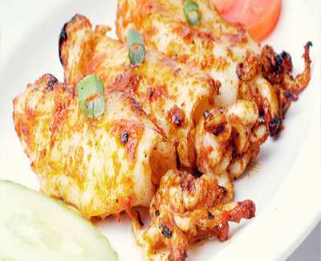

Bahan:
- 8 potong cumi ukuran sedang-besar, lepas kepalanya, buang kulit dan cuci bersih isinya
- 3 lembar daun jeruk
- 500 ml santan
- Secukupnya Minyak Goreng / sayur
- 2 sdm air asam jawa
Bumbu Halus:
- 5 buah cabai merah
- 3 siung bawang putih
- 5 buah cabai merah
- Cabai rawit sesuai selera
- 3 butir kemiri
- 1 sdt garam
- 2 cm kunyit
Cara Membuat:
- Rebus cumi dengan santan, bumbu yang dihaluskan, dan tambahkan asam jawa.
- Masak dengan api kecil hingga bumbu mengering, angkat, dinginkan..
- Tusuk satu cumi dan kepalanya dalam satu tusuk sate.
- Bakar cumi sambil sesekali dibolak-balik dan diolesi sisa bumbu.
- Jika sudah tercium aroma panggang, angkat cumi, lepas dari tusukannya.
- Tata Cumi Bakar Bumbu Rujak di atas piring saji. Sajikan selagi hangat.